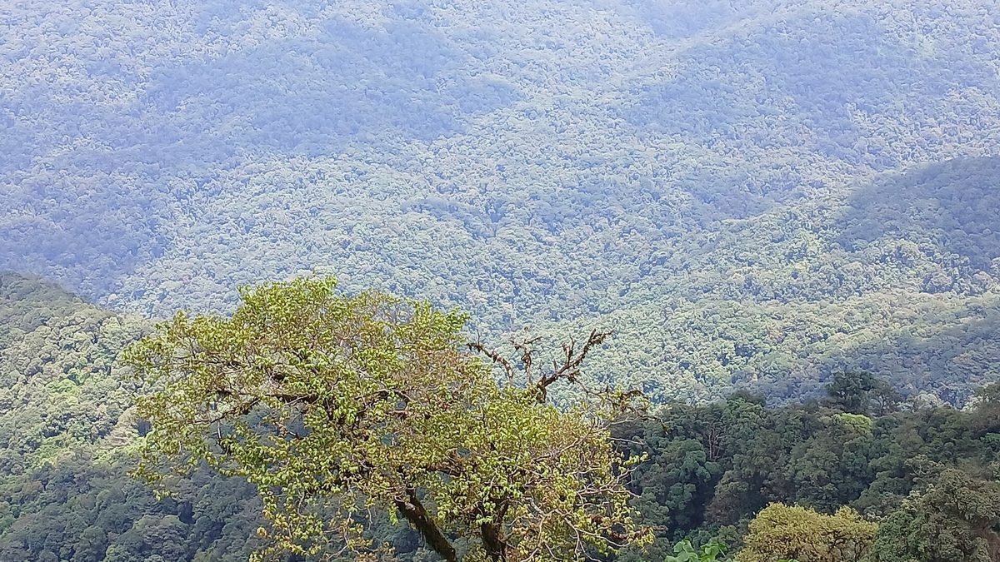
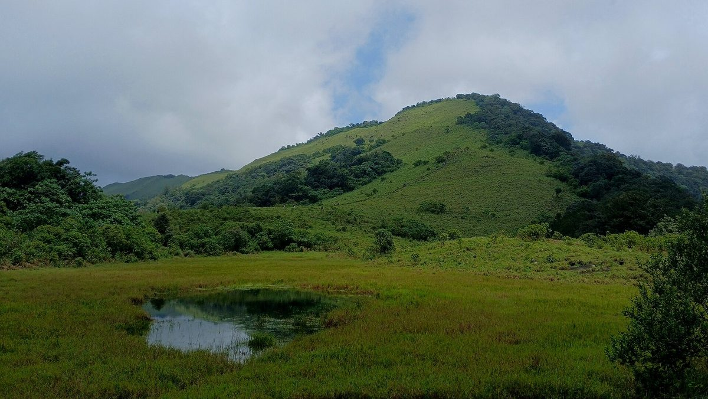
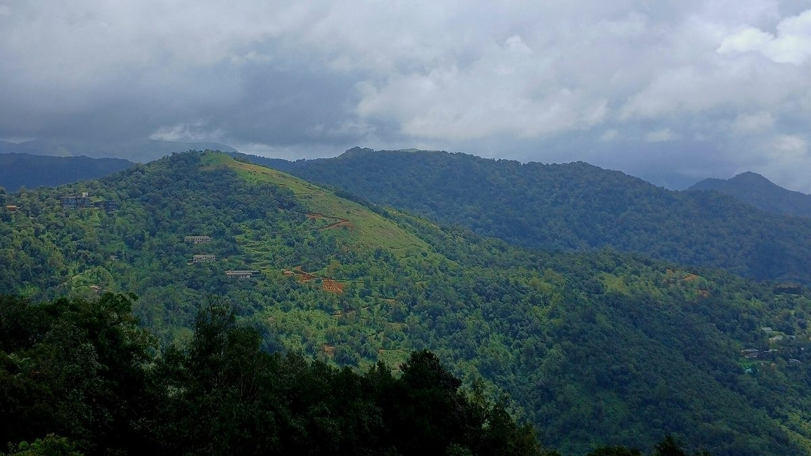

Most solo trips get planned like a sprint. Five places, three cafés, one sunrise you set four alarms for. You come home with a full camera roll and the same tired brain you left with.
Paithalmala asks for something different. It is one hill, and it’s best done slowly.
It sits at about 1,372 metres in the Western Ghats, on the Kerala–Karnataka border, with the Kodagu forests on the far side. It is one of the highest points in Kannur district, roughly 65 km from Kannur town and about 40 km from Taliparamba. That’s far enough that the drive itself starts to change your pace.
This is the hill we’re building Work From The Mountains around. Here’s how we’d do it alone, calmly, if you only had a day or two.
Go for one thing, not five
The temptation on a solo trip is to fill every gap. Resist it here.
Give Paithalmala the whole day. Arrive the evening before if you can, sleep early, and let the trek be the only fixed plan. Everything else, like a long lunch in Kudiyanmala, a slow drive back through rubber and pepper country or an hour doing nothing on a grassy slope, can stay optional.
You’ll notice more with one plan than with five.
The walk up
There are two common ways up. The longer, steeper route starts from the Kappimala side near Alakode and suits people who already trek often. The easier, more popular one starts at Pottenplave, near Kudiyanmala, where the Forest Department counter sits. For a solo, unhurried day, Pottenplave is the sensible choice.
The trail does something lovely. It starts in thick, shaded forest, damp and green and full of birdsong, then opens slowly into wide grassland near the top. At the summit there’s an old watchtower, and on a clear day you look one way into the Kodagu valleys and the other way back over the Kannur plains.
Most people take a couple of hours each way. Some guides say less, but there’s no prize for speed. Stop where the forest thins out. Sit for ten minutes. Nobody’s timing you.

Practical, without the panic
You don’t need much, but what you need matters.
- Start in the morning. Forest counters keep fixed hours and close entry well before dark. Check the current timings locally or with the District Tourism Promotion Council the day before. They do change.
- Carry water. About two litres. Don’t count on finding any along the trail.
- Wear shoes that grip. The path gets muddy, especially in and after the monsoon.
- Think about the season. In the rains, expect mist, wind, slippery stretches and leeches. A little salt or a leech-guard spray helps. From the cooler months into early summer, the views are usually clearer and the trail drier.
- Tell someone your plan. It’s a well-used trail, but it’s good solo-trip practice anywhere. Share where you’re going and when you expect to be back.
- Take your litter down with you. The hill stays beautiful because people leave it that way.
That’s it. No special gear, no permits to chase days ahead. Just a bit of care.
Why it works well alone
Some places are better with a group. Paithalmala is one of the rare ones that’s often better alone.
The forest section is quiet enough that you start hearing small things, like wind in the canopy, your own footsteps and water somewhere you can’t see. The grassland near the top is open enough that thinking feels easier. People who work at screens all week know the feeling: the noise in your head slowly settles to the size of the view.
Being alone also means you choose the pace. You can stop for a photo you’ll never post, or turn back early if the mist rolls in, without negotiating with anyone.

Respect the place, and the people around it
This isn’t a resort town. The villages around Kudiyanmala and Pottenplave are working communities, and the hill is protected forest. Ask before photographing people. Keep music in your headphones, or better, at home. Buy your tea and snacks from the small shops on the way. Stay on the marked trail.
Tourism done calmly is mostly just this: arrive quietly, spend locally, leave nothing behind.

Why we’re building around this hill
We chose Paithalmala for the same reasons it makes a good solo day. It has height, green cover, cool air and a pace that doesn’t push you.
Work From The Mountains is our idea of how to turn a day like this into a week: Stay · Work · Explore · Connect. Proper desks and a separate coworking room for focused mornings. The trail, the farm and the garden for afternoons. A campfire and people worth talking to in the evenings. A calm solo trip, stretched out, with Wi‑Fi.
We’re building it in public. Follow along on Instagram at @workfromthemountains, where we share the place, the plans and the process.
Until then, if you’re near Kannur with a free day, take the hill slowly. It’s worth it.